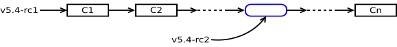

"git request-pull" and confusing diffstats
While git request-pull is intended to be a general-purpose command, it's no secret that its output is designed for the needs of one specific consumer; it contains almost everything Linus Torvalds needs to know when considering a request to pull a tree into the mainline kernel. This information includes the commit upon which the tree is based, the timestamp for the most recent commit in the tree, the tree to pull the commits from, the maintainer's description of the changes, a list of commits (in the git shortlog format), and a diffstat showing which files will be touched. See a typical pull request to see how all of those elements are worked into a single email.
That example is generated from a relatively straightforward development history that looks something like this:
Generating both the commit log and the diffstat for this history is relatively straightforward, and the pull requests looks exactly as one would expect.
Recently, Will Deacon ran into a more complex situation, though. His tree was initially based in 5.4-rc1, but then required a merge of 5.4-rc2 to obtain the dependencies for a fix. The history ended up looking something like this:

When one runs git request-pull for a tree like this, the commit-log portion will look exactly as expected — it contains the commits in the local tree. The diffstat, though, is likely to reflect a large number of unrelated changes, making the pull request look like a scary beast indeed. In essence, that diffstat will reflect not just the local changes, but also everything that was pulled into the local tree when 5.4-rc2 was merged. That makes it hard, at best, to see what the pull request will actually do.
Deacon was surprised that the commit log was correct while the diffstat was wrong. Torvalds explained it this way:
A log is an operation on a _set_ of commits (that's the whole point - you don't list the beginning and the end, you list all the commits in between), while a diff is fundamentally an operation on two end-points and shows the code difference between those two points.
And the summary versions of those operations (shortlog and diffstat) are no different.
He went on to say that, when there are only two endpoints and the history is simple, it is not hard for a tool like Git to calculate the difference between them. Throwing another merge into the mix complicates the situation, though, by adding another endpoint. The end result is the useless diffstat included in the pull request.
Deacon resolved the issue by merging the current mainline with the tree to be pulled:
The diffstat could then be generated manually choosing the mainline and the merged tree as the two endpoints; the only differences that will be visible will be those that are not in the current mainline — the changes to be pulled from Deacon's tree, in other words. The clean diffstat was then manually patched into the pull request. The merge itself can then be thrown away; it should not be part of the commit stream sent upstream. As Torvalds explained, performing the merge reduced the diffstat problem back to two simple endpoints, so the result became as one would expect.
Should maintainers perform this sort of dance before sending pull requests
upstream? It seems that Torvalds appreciates the effort; he described
the result as a "good quality
" pull request. He also noted,
though, that he often gets pull requests with confusing diffstats and
doesn't really have a hard time dealing with them. Still, maintainers who
want to be sure that their pull requests are as pleasing to the recipient
as possible may want to go to the extra effort.
The best solution, of course, would be to fix git request-pull to
do the right thing in this sort of situation. Depending on how complex the
merge history is, though, "the right thing" may not always be entirely
obvious. It might also, like the merge described above, require changing
the repository, which the request-pull command does not currently
do. But, as Ingo Molnar noted, it
should at least be possible for git request-pull to detect this
situation and issue a warning when it arises. Then, at least, developers
would not be surprised by a bogus diffstat — something that can easily
happen immediately after having sent it upstream.
| Index entries for this article | |
|---|---|
| Kernel | Development tools/Git |
Posted Oct 21, 2019 23:02 UTC (Mon)
by unixbhaskar (guest, #44758)
[Link]
Posted Oct 22, 2019 6:44 UTC (Tue)
by Spack (guest, #77556)
[Link] (2 responses)
Posted Oct 22, 2019 8:26 UTC (Tue)
by famzheng (subscriber, #121411)
[Link]
Posted Oct 22, 2019 14:50 UTC (Tue)
by cyphar (subscriber, #110703)
[Link]
1. Maintainers' trees are public, and thus developers base their work on them. Rebasing a public tree causes trouble for downstreams.
[1]: https://www.kernel.org/doc/html/latest/maintainer/rebasin...
Posted Oct 22, 2019 11:23 UTC (Tue)
by fsateler (subscriber, #65497)
[Link]
Why isn't `git diff mainline...HEAD` (three dots) used?
Posted Oct 22, 2019 11:28 UTC (Tue)
by jezuch (subscriber, #52988)
[Link]
git diff start...end
Instead of:
git diff start..end
(I learned this only this year, despite being considered a git expert in my area!)
Posted Oct 22, 2019 15:34 UTC (Tue)
by pbonzini (subscriber, #60935)
[Link]
Posted Oct 22, 2019 17:07 UTC (Tue)
by jgg (subscriber, #55211)
[Link]
Based on a conversation with Linus, what I do is to prepare two branches, one that has the unmerged tree, and one that has a merge commit to latest at the very top. The Pull Request is for the first tree, but the diffstat is replaced with the one from the second. The second is tagged something like 'for-linus-merged' and is mentioned in the PR if there were conflicts to resolve. I usually have minor conflicts.
Linus explained he will use the -merged tag to compare any merge conflict resolutions he makes against the sender's version of those resolutions.
You can't really 'fix' git pull-request because it doesn't have a merged base to do the diff against. Perhaps the best one could do is have it try to automerge and use that if there are no conflicts. Uwe provided an algorithm that does this later in the thread.
The diagram in the article is not quite right. The key thing is that 'C2' was sent and merged by Linus into rc3, and then rc2 was merged on top of a commit that was logically in rc3. This 'going backwards' creates the problem.
It could also have been avoided if rc3 was merged instead of rc2. ie don't merge older tags into your tree.
Posted Oct 22, 2019 23:54 UTC (Tue)
by ceplm (subscriber, #41334)
[Link]
Something to help with https://gitlab.com/gitlab-org/gitlab/issues/14116 .
Posted Oct 26, 2019 7:57 UTC (Sat)
by kccqzy (guest, #121854)
[Link]
It should be noted that this kind of situation has been known since a very long time and some commercial Git hosting providers do exactly the same dance to show a good diff, namely perform a merge and show that diff. See for example here. I got used to seeing this kind of diff very quickly. If
"git request-pull" and confusing diffstats
Rebase
Rebase
Rebase
2. Rebasing a tree before you send it to Linus results in you sending untested patches (any previous tests run on your tree are invalid).
"git request-pull" and confusing diffstats
"git request-pull" and confusing diffstats
"git request-pull" and confusing diffstats
"git request-pull" and confusing diffstats
"git request-pull" and confusing diffstats
"git request-pull" and confusing diffstats
git request-pull could automate this it would be great. However I do think this is easier in a centralized environment where every change to the mainline can automatically cause the pull request diff to be recompiled.